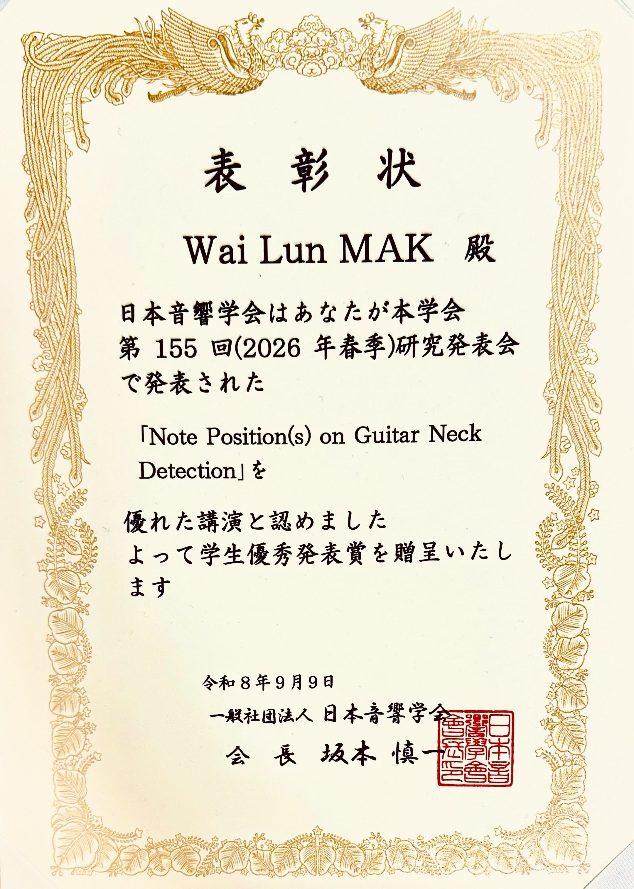

株式会社コスパ 秋葉原 (2026年2月~2026年6月)
- 店舗での接客や販売、品出しなどの業務に励みました。日本人のお客様だけでなく、海外からのお客様にも対応いたしました。同僚は全員日本人でしたので、教科書だけで学べない敬語や礼儀、現場での効率的なコミュニケーション方法をしっかり学びました。
- そのバイトは、私にとって本当に価値のある素晴らしい経験になりました。

現在修士課程で研究しているのは、リアルタイム音声分析AIのアルゴリズムを高速化する技術です。
私の趣味はギターの演奏なので、「演奏音から即座にギターコードを判別し、演奏者を支援するAI」の実現を目指して修士研究に取り組んでいます。
現在の技術は単音（シングルノート）の判別が限界ですが、最も大きい挑戦は和音（コード）のリアルタイムの認識でした。
私はこの課題に対し、TensorFlowを用いた深層学習モデルの構築だけでなく、C++言語を深く追究してデータ処理アルゴリズムを何回も見直し、徹底的な処理の高速化を実現しました。
そこで、最近は、TensorFlowによる深層学習モデル構築に加え、C++を用いて音声データを低遅延で読み込む技術を学び、データ処理アルゴリズムを高速化しました。
その成果が高く評価され、今年度の「日本音響学会 第32回学生優秀発表賞」を受賞しました。
研究で学んだ「AIと特別なプログラミング言語を使ってシステムを速く動かす方法」を活かして、将来はゲームの描画負荷軽減やリアルタイム物理挙動の改善など、高度なプレイ体験の実現に貢献したいと考えています。